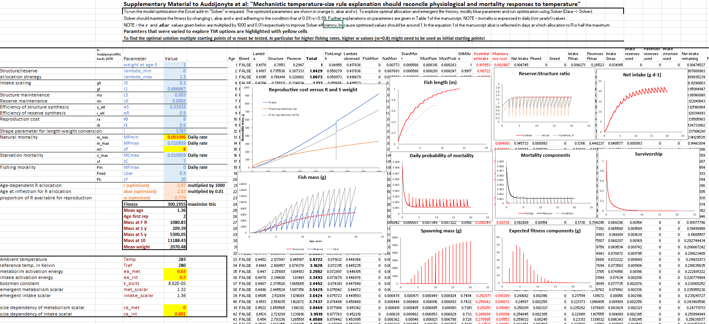
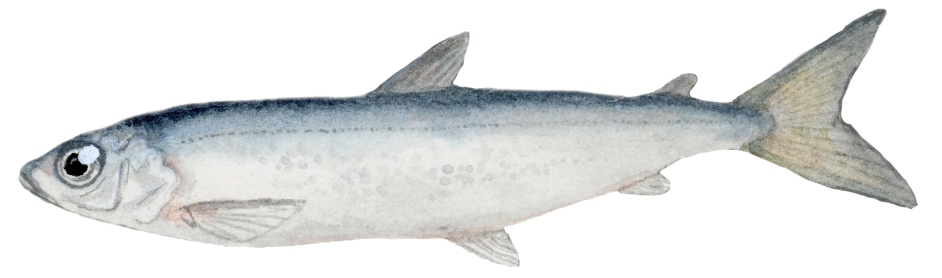

Model to explore temperature impacts on fish growth
Introduction
Fish growth is strongly dependent on temperature. In warmer conditions fish often growth faster as juveniles, mature at smaller sizes and are smaller as adults. This is known as the temperature size rule, as defined by David Atkinson in 1994.

However, the mechanisms behind this growth remain unclear. In this model we propose that temperature size rule (TSR) emerges in response to both physiological changes (faster metabolism and intake) and growth and reproduction optimisation to changes in mortality.
We develop a physiologically structured life history optimisation model and explore a range of parameters and scenarios under which TSR is likely to emerge. For a brief introduction into the model you can watch these slides or watch this conference talk.
Model
The model is written in Microsoft Excel and R environment. All model code and details are available on this GitHub repository. The main model Excel file can also be downloaded here. In this Excel file you can modify temperature response parameters and their size dependency, optimise the model using Solver option built in Excel and see the resulting growth and reproduction curves, as shown in the figure below.

Application of the model
The open access publication presenting this model is published in a special issue of The Biological Bulletin. If you want to learn more about the role of temperature and oxygen on fish growth, please also check out this overview publication in the same special issue.
This model is easy to modify and explore, and you are welcome to use it in your research and teaching. If you would like to suggest or implement new model modifications and publish them, please contact us at lydekaipaliepus@gamtc.lt
